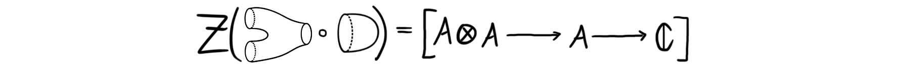

For those that don’t know I am a fifth year mathematics student at NTNU, meaning I am finishing my masters degree after this semester. During my time at NTNU I have had some wonderful classes, and some wonderful teachers. Since most I post about on this blog is related to topology, it is very safe to assume that some of my most memorable courses are exactly the topology courses. I very recently looked at my notes from my first topology course, or rather one of the two first, as I took two in parallel during my fourth semester. The course was focused on differential topology and the study of smooth manifolds. It was taught by my now supervisor, but on a couple of the last lectures we had some guest appearances from the other topology professors at NTNU. One of these guest lectures is the focus of todays blog post.
The reason I still remember this particular lecture is because I left it understanding nothing. Some lectures takes some time to process, but this was not one of those. The information contained in the lecture was just so far above my head at the time, and it has taken me until now to understand it. I remember the lecture because it was inspiring, because I realized there is no cap on mathematical knowledge, because this is a field where one can always continue learning and never understanding it all. Not all lectures need to be understandable, or even exam-relevant (this one luckily wasn’t), some lectures just need to be inspiring and forward-looking.
Anyways, below are my notes from that lecture. I have added some text to clarify some points and to make the post more cohesive, but the message and the theory is as written in the notes. If you want to see my actual notes for reference, you can find them here. You can also read the lecturers notes here. This material was presented in a 2×45 minute lecture, so details will be a bit sparse, and knowledge will mostly be presented on a need to know basis. As this comes from a lecture, the post is also somewhat long, so you are now officially warned.
Introduction to topology, 19.04.18
2-dimensional topological quantum field theories
A topological quantum field theory (TQFT) is a very rich topological gadget with many use cases. These objects encode many of the fundamental invariants that we associate to manifolds. More precisely, an n-dimensional TQFT is a symmetric monoidal functor $Z:nCob\longrightarrow Vect_{\mathbb{C}}$. Here the category $nCob$ is the category of $n$-dimensional manifolds and cobordisms, and the category $Vect_\mathbb{C}$ is the category of complex vector spaces. The latter can be substituted by another linear category if wanted. When $n=2$ we have the following theorem.
Theorem: There is an equivalence of categories $2TQFT\simeq cFA_{\mathbb{C}}$, where $2TQFT$ is the category of 2-dimensional TQFTs and $cFA_\mathbb{C}$ is the category of commutative Frobenius algebras.
The goal of the lecture, and hence this blog post, will be to understand the statement of this theorem. We will not present a proof. To make sense of the statement of the theorem we will need to do two things.
- Understand the formalism we use to present the statement, in this case categories, functors, symmetric monoidal categories, and equivalences of categories.
- Understand the presented objects and the statement itself, in this case cobordisms and commutative frobenius algebras.
Categorical preliminaries
We begin with understanding the formalism used to present the theorem, namely category theory. We only present the few bits we actually need, but a proper understanding of this theory would probably be useful for all readers.
Definition (Category): A category $\mathcal{C}$ consists of objects $A, B, C, \ldots$ , and morphisms $A\rightarrow B$. We write $A\in \mathcal{C}$ for objects and $f\in \mathcal{C}(A, B)$ or $f\in Hom_{\mathcal{C}}(A, B)$ alternatively for morphisms. These objects and morphisms must subject to the following axioms:
- Given $A\rightarrow B$, $B\rightarrow C$ we can compose them to get $A\rightarrow C$
- Composition is associative, i.e. for morphisms $A\rightarrow B\rightarrow C\rightarrow D$ we have $h\circ(g\circ f) = (h\circ g)\circ f$
- For every $A\in \mathcal{C}$ there is an identity morphism $id_A:A\rightarrow A$, such that for any morphism $f:A\rightarrow B$ we have $f\circ id_A = f = id_B \circ f$
Examples are $Vect_\mathbb{C}$, the category of vector spaces over $\mathbb{C}$ with linear maps and $Top$, the category of topological spaces with continuous maps.
In mathematics we are often, or almost always more interested in maps between things instead of the things themselves. Hence we need maps between categories, which are called functors.
Definition (Functor): A functor $F:\mathcal{C}\longrightarrow \mathcal{D}$ between two categories, consists of a map from the objects of $\mathcal{C}$ to the objects of $\mathcal{D}$, and a map $F_{A, B}: \mathcal{C}(A, B)\longrightarrow \mathcal{D}(A, B)$, such that:
- Given $A\rightarrow B\rightarrow C$ in $\mathcal{C}$, then $F_{A, C}(g\circ f) = F_{B,C}(g)\circ F_{A, B}(f)$
- For every $A\in \mathcal{C}$ we have $F_{A,A}(id_A) = id_{F(A)}$.
As said, we are often interested in maps instead of objects, and the wonderful thing about category theory is that we can make sense of maps between other maps. If you are interested in such things I have a couple blog posts about higher category theory that flesches out this idea. Here we define maps between functors, which are called natural transformations.
Definition (Natural transformation): Let $F, G: \mathcal{C}\longrightarrow \mathcal{D}$ be two functors. A natural transformation $\eta:F\Longrightarrow G$ assigns to each object $A\in \mathcal{C}$ a morphism $\eta(A):F(A)\longrightarrow G(A)$ in $\mathcal{D}$, such that for each morphism $f:A\longrightarrow B$ in $\mathcal{C}$, we have $G_{A, B}(f)\circ \eta(A) = \eta(B)\circ F_{A,B}(f)$. We say $\eta$ is a natural isomorphism if $\eta(A)$ is an isomorphism for all $A$.
The reason we introduce these maps between maps, is because we want a way to compare categories to see if they are similar. In other fields of mathematics we usually define isomorphisms between objects to satisfy this need. These are usually defined to be maps $f:A\longrightarrow B$ such that there exists a two sided inverse. In category theory however, it turns out that such isomorphisms between categories is a too strong notion of comparison, as they leave out categories we intuitively want to consider “the same”. In topology we also run into this problem, and we then can define homotopy equivalences instead. The following definition will hopefully be reminiscent of such types of “weaker” equivalences.
We say two categories
$\mathcal{C}$ and $\mathcal{D}$ are equivalent if there exists two functors $F:\mathcal{C}\longrightarrow \mathcal{D}$ and $G:\mathcal{D}\longrightarrow \mathcal{C}$ such that $G\circ F\simeq id_\mathcal{C}$ and $F\circ G \simeq id_\mathcal{D}$.
If you want some more information on equivalences of categories I also have a post going into more details explaining why they are “more correct” than isomorphisms of categories.
We now have the basics covered, and will now start to add on more structure which we want later. We said that a TQFT was a symmetric monoidal functor, so we need to explain what we mean by that.
Definition (Strict monoidal category): A strict monoidal category $(\mathcal{C}, \otimes , I)$ is a category $\mathcal{C}$ together with a functor $\otimes:\mathcal{C}\times \mathcal{C}\longrightarrow \mathcal{C}$ and an object $I\in \mathcal{C}$, such that $\otimes$ is associative and $I$ is a left and a right unit for $\otimes.$
This should be thought of as a not necessarily commutative product on the category. To make it nicer, i.e. introduce a notion of commutativity, we need the following definition.
Definition (Symmetric strict monoidal category): We say a strict monoidal category is symmetric if for each pair $A, B\in \mathcal{C}$ there is a twist map (also sometimes called a braid map) $\tau_{A, B}:A\otimes B\longrightarrow B\otimes A$ such that
- for any two maps $f:A\longrightarrow A'$ and $g:B\longrightarrow B'$ we have $g\otimes f \circ \tau_{A. B} = \tau_{A', B'}\circ f\otimes g$
- for any triple $A, B, C \in \mathcal{C}$ we have $\tau_{A, B\otimes C} = \tau_{A, B}\otimes id_C \circ id_B\otimes \tau_{A, C}$
- for any pair $A, B\in \mathcal{C}$ we have $\tau_{A, B}\circ\tau_{A, B} = id_{A\otimes B}$.
As said above, this should be thought of as a commutative product on the category.
The last part of this categorical puzzle is to define a symmetric monoidal functor to be a functor between two symmetric monoidal categories such that the product structure is preserved. This can be thought of as being similar to group homomorphisms between abelian groups.
Cobordisms
The next part of the puzzle is to define the different stuff used in the theorem we want to state. From here on out we will assume that all manifolds mentioned are smooth and compact. To define TQFTs we need two things; cobordisms and vector spaces. We assume the reader is familiar with vector spaces, so the remaining part are the cobordisms. We will however note that the category of vector spaces form a symmetric monoidal category with the tensor product operation on vector spaces. This is required for us to have a symmetric monoidal functor after all. Ok, over to the topology.
Let $M, N$ be two oriented manifolds of dimension $n$. For example:
A cobodism $W:M\longrightarrow N$ is an oriented manifold $W$ of dimension $n+1$ such that $\partial W = M\coprod N$, for example

Cobordisms can be though of as evolving a manifold over time. It turns one manifold into another by some continuous, but somehow non-continuous process. If we chop the cobordism into slices we can play them after each other from start to finish and get a little movie for how the one manifolds twists, turns, bends, wobbles, splits, merges and deforms into another manifold. If you have ever seen the slice-images from scanning a brain from top to bottom you will hopefully get the picture.
We define $2Cob$ to be the category which has objects being closed oriented 1-dimensional manifolds and morphisms being orientation preserving boundary extending diffeomorphism classes of 2-dimensional cobordisms. This means that we consider two cobordisms $W_1, W_2: M\longrightarrow N$ to be equivalent if there exists an orientation preserving diffeomorphism (smooth isomorphism) $f:W_1\longrightarrow W_2$ that extends the isomorphism $\partial W_1 \cong M\coprod N \cong \partial W_2$.
For any $M \in 2Cob$, the identity morphism $id_M$ is given by $M\times I$, where $I$ is the unit interval. Think about this a just a tube between the two manifolds. Composition of $W_1:M_1\longrightarrow M_2$ and $W_2:M_2\longrightarrow M_3$ is given by $W_1 \coprod_{M_2} W_2$, i.e. gluing the two cobordisms together along their shared boundary $M_2$. Gluing together the following two cobordisms
and

gives us the new cobordism
between $M_1$ and $M_3$. It is important to note that it is not trivial to give the composition the structure of a smooth manifold. It can be done in many different ways, but luckily for us they all produce equivalent cobordisms.
With this we have shown that $2Cob$ is in fact a category. If we let $\otimes = \coprod$, i.e. the normal disjoint union, then $(2Cob, \coprod, \emptyset )$ is a monoidal category, where $\emptyset$ is the empty set. There is a diffeomorphism $M_1\coprod M_2 \longrightarrow M_2\coprod M_1$. This diffeomorphism induces a cobordism $T: M_1\coprod M_2 \longrightarrow M_2\coprod M_1$, which we call the twist cobordism. It can be visualized as
Recall that all closed connected oriented 1-dimensional manifolds are equivalent to the circle. Hence the different manifolds, i.e. the objects in $2Cob$ are essentially just different amount of copies of the circle. This can be made more precise, but we will not need the entire formalism today. Instead we define a skeleton for $2Cob$ to be the full subcategory ${ 0, 1, 2, 3, \ldots, n, \ldots }$ with $n=\coprod_n S^1$. By abuse of notation, we denote this category onwards by $2Cob$. It is important to note that the skeleton is equivalent as categories to the original category, but this new one is smaller and makes everything nicer and very much easier to draw!
In the drawings we have presented we notice that all the cobordisms seem to be built up from similar parts. They mostly seem to consist of tubes, splitting into more tubes or joining into fewer tubes. We will see that this is actually the case, but first we need a precise formulation of what this means.
Definition (Generating set): A generating set for a monoidal category $(\mathcal{C}, \otimes, I)$ is a set $S$ such that all morphisms in $\mathcal{C}$ can be obtained from the elements in $S$ by composition or by $\otimes$. If $S$ is a generating set, then we say $\mathcal{C}$ is generated by $S$.
The point of the discussion we now go into is the fact that we can use the classification of surfaces to give an explicit description of $2Cob$ by generators and relations. This will allow us to say explicitly how the image of a functor $2Cob\rightarrow Vect_\mathbb{C}$ behaves.
Theorem: The category $2Cob$ is generated by the following six cobordisms, often called the basic cobordisms.
This means that we can build any cobordism from these easy to handle pieces! This also extends to the following definition, which just described a decomposition of a cobordism into elements of the generating set above. For simplicity of notation we say a cobordism $W:m\longrightarrow n$ has $m$ in-boundaries, and $n$ out-boundaries. From a drawing standpoint this just means we have $m$ circles as boundaries on the left, and $n$ circles as boundaries on the right.
Definition (Normal form): The normal form of a connected surface with $m$ in-boundaries, $n$ out-boundaries and genus $g$, is the decomposition of the surface into a number of basic cobordisms. We can for example decompose the following cobordism
into the following union of basic cobordisms
Notice that it has the same number of in-boundaries, out-boundaries and the same genus.
The relations we need to have our explicit description of $2Cob$ are called identity, unit and counit, associativity and coassociativity, commutativity and cocommutativity, Frobenius and twisting. Since the category is generated by six cobordisms, we only need to see what happens on combinations of these. Visually, these are the relations we need.
The identity relation says that composing with the identity cobordism, i.e. the cylinder $S^1\times I$ does nothing. i.e.
The unit and counit relation looks like:
Hopefully the associativity relation (top) is somewhat recognizable, and the coassociativity (bottom) relation is just the dual of it, i.e.
The same goes for the commutativity relation (top) and the cocommutativity relation (bottom):
The last two are maybe a bit less common. The Frobenius relation looks like:
And the twisting looks like:

Together the six basic cobordisms and the above relations make $2Cob$ into a really nice category to work with, as we can just draw everything we want.
2-dim TQFT’s and $cFA_\mathbb{C}$
We have now almost arrived at the statement of the theorem. To remind ourselves we again state the definitions of the main components in the theorem.
Definition (TQFT): A 2-dimentional topological quantum field theory (2-dim TQFT) is a symmetric monoidal functor $Z: 2Cob\longrightarrow Vect_{\mathbb{C}}$.
These functors form a category where the objects are the 2-dim TQFTs and the morphisms are natural transformations between them. Denote this category by $2TQFT$. The other category we need is the category of commutative Frobenius algebras. We haven’t actually defined what we mean by this yet, so lets do that.
Definition (Commutative Frobenius algebra): A commutative Frobenius algebra consists of a complex vector space A together with a commutative and associative product $m:A\times A\longrightarrow A$ and a non-degenerate bilinear form $\mu: A\times A\longrightarrow \mathcal{C}$ such that $\mu(m(a, b), c) = \mu(a, m(b, c))$. We often write $m(a, b)$ as just $a\cdot b$, and then the relation becomes $\mu(a\cdot b, c)=\mu(a, b\cdot c)$.
The most used examples of such algebras are matrix algebras $M_n(\mathbb{C})$ where $\mu(a, b)$ is the trace of their product, i.e. $\mu(a, b)=tr(a\cdot b)$.
To at least justify some part of the theorem, and see where the Frobenius algebras come into play we look at the following. Let $Z$ be a 2-dim TQFT. Then the image of the object $1=S^1$ in $2Cob$ hits some complex vector space, which we denote by $A$, i.e. $Z(S^1) = A$. Then $Z(n) = A^{\otimes n} = A\otimes \cdots \otimes A$ because $Z$ is symmetric monoidal. This also means that $Z(\emptyset)=\mathbb{C}$.
Further we have that $Z$ applied to morphisms in $2Cob$, i.e. the cobordisms, must produce morphisms between the different tensor products of $A$. For example:
is a map between $A\otimes A$ and $A$, because the cobordism is a morphism between $2$ and $1$. By the above relations this map is commutative and associative product, which makes $A$ into a commutative algebra with identity element given by
This is in fact the identity of the algebra product defined above, because of the unit relation. Moreover we have a map $A\longrightarrow \mathbb{C}$ given by

and that the composition

which we can denote by $\mu$, is non-degenerate bilinear form on $A$. This means that we have a commutative associative product and a non-degenerate bilinear form on our vector space. The last piece of the puzzle comes from the Frobenius relation. This makes it so that $\mu(a\cdot b, c) = \mu(a, b\cdot c)$.
Hence $A$ is a commutative Frobenius algebra! This means that any vector space in the image of our 2-dim TQFT is in fact a commutative Frobenius algebra, and that we have a functor $F: 2TQFT\longrightarrow cFA_\mathbb{C}$ given by $F(Z) = Z(S^1$). The fact that every commutative Frobenius algebra arises this way is a lot harder to show and we will not cover it here. But it can be done, and once it is, we finally have our theorem:
Theorem: The category of 2-dimentional topological quantum field theories, $2TQFT$, is equivalent to the category of commutative Frobenius algebras, i.e.
$$2TQFT \simeq cFA_\mathbb{C}.$$